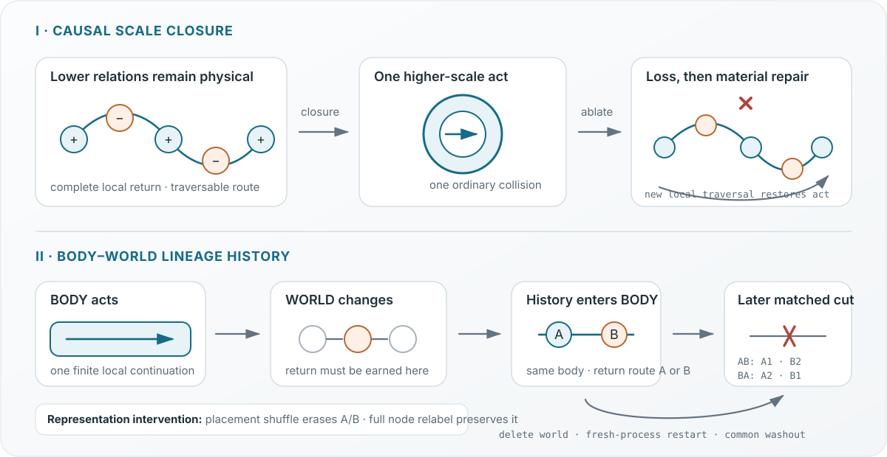

Public abstract · Basal cognition / morphogenesis
When Do Parts Become a Whole?
A minimal non-neural test of causal scale closure and material lineage memory
The question and hypothesis
Regeneration and morphogenesis make an old question experimentally concrete: when do locally interacting parts become one higher-scale causal individual, rather than merely an aggregate? Work on bioelectric pattern memory and multiscale competency shows that tissues can retain history, correct anatomical error, and pursue large-scale outcomes despite perturbation [1–3]. This work does not model planarian physiology. It asks for a narrower, substrate-independent minimum that can be built, injured, and falsified.
The specific contribution is a joint intervention test: the same local-rule carrier must acquire a higher-scale act, lose and rebuild it after ablation, and carry an action-earned, harness-routed body–world history into later matched repair. Contact becomes meaningful for a body here only when it leaves a persistent relation in that body and changes what it can do after a later perturbation.

Operational criterion
A bounded causal scale closure must survive interventions, not merely resemble a whole.
Causal octave (1:2) is the informal name for retained differences acting as one new causal unit without erasing lower causes—not a numerical ratio.
- Lower relations remain materially present and traversable.
- The group supports one act unavailable before closure.
- Targeted ablation removes the act while preserving the lower route.
- A new local traversal through surviving material restores it.
- A world-earned relation survives world removal and changes response to a later matched injury.